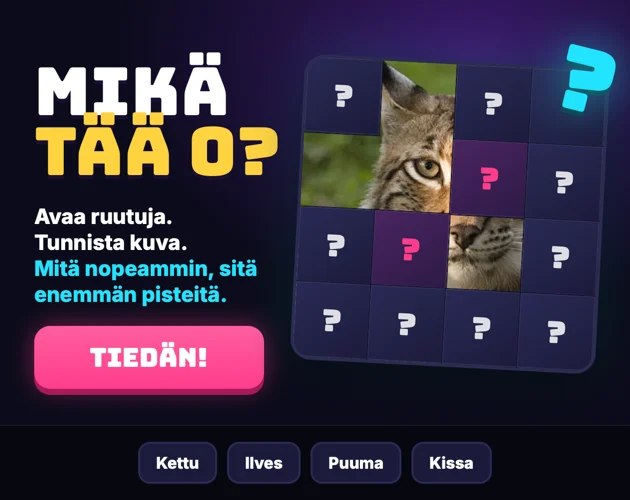
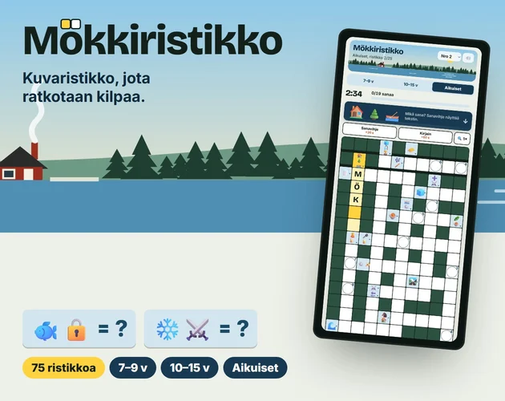
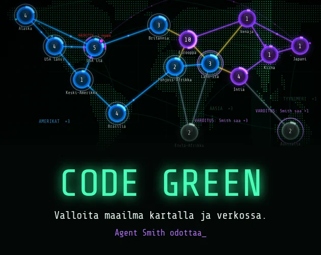

Mikä tää o?
Avaa ruutuja, tunnista kuva ja vastaa ennen kuin potti sulaa. Haasta kaverit ja nouse viikkoliigassa.
> komentorivi
Ilmaisia selainpelejä. Ei asennusta, ei tunnuksia. Toimii puhelimella ja tietokoneella.

Avaa ruutuja, tunnista kuva ja vastaa ennen kuin potti sulaa. Haasta kaverit ja nouse viikkoliigassa.


Strategiapeli kahdella rintamalla: valloita maailma kartalla ja hakkeroi verkkoa. Agent Smith odottaa.